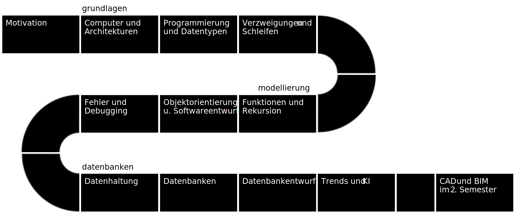
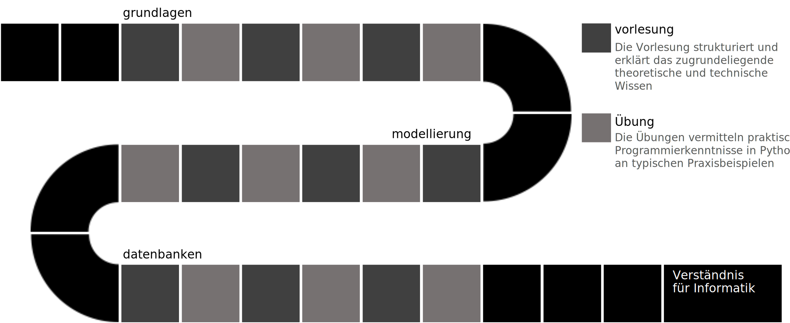
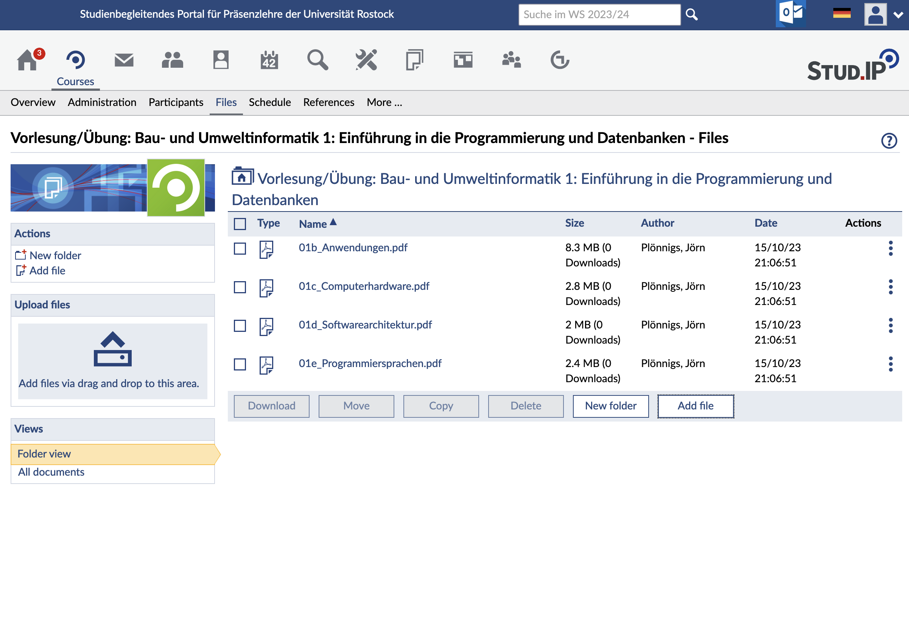
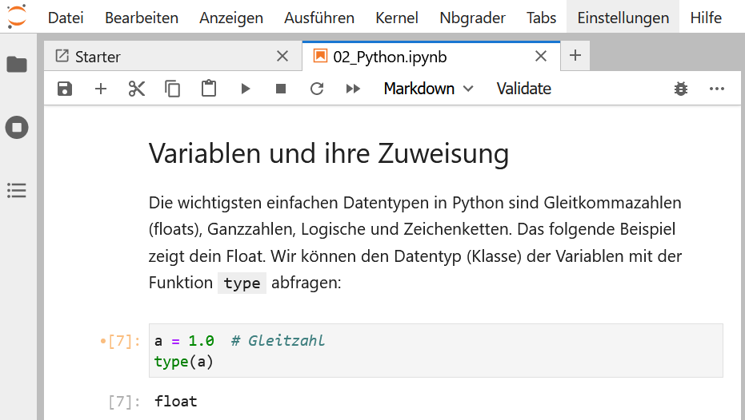
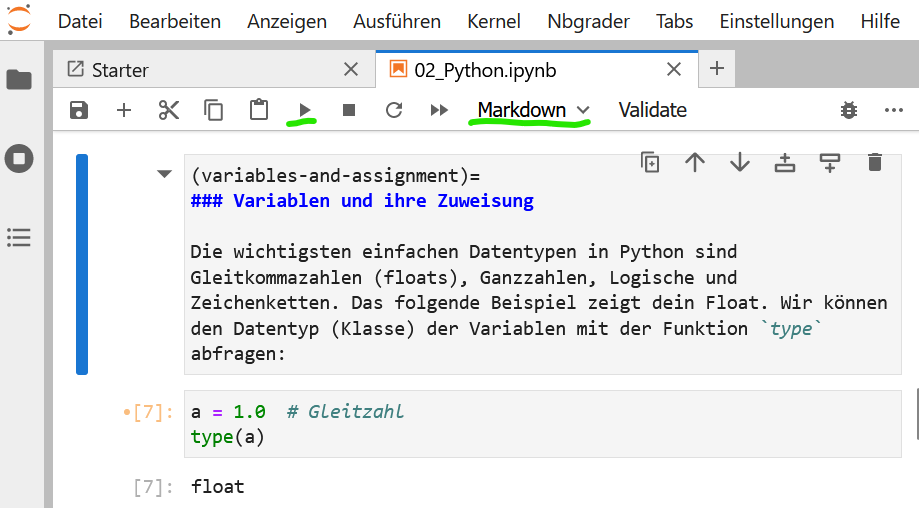
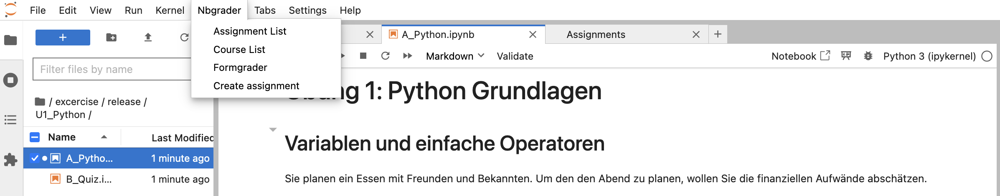
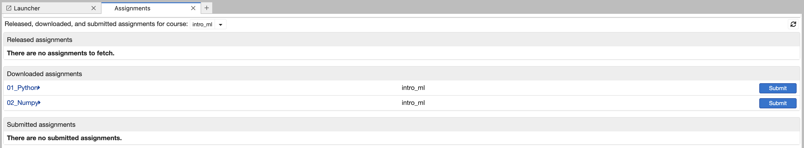
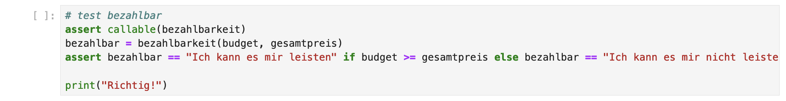
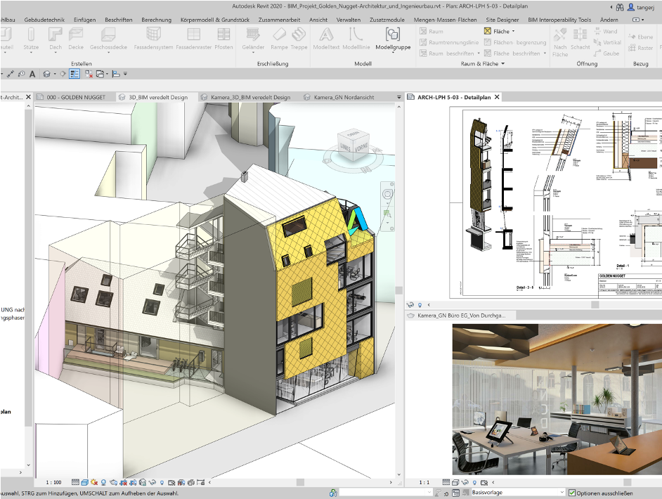

Overview#
I never wrote things down to remember; I always wrote things down so I could forget.
— Matthew McConaughey
Slides/PDF#
Introduction#
Prof. Dr.-Ing. habil. Jörn Plönnigs
AI for Digital Construction
Office: Justus-von-Liebig-Weg 2, Room 114
Email: Joern.Ploennigs@uni-rostock.de
Phone: 0381 498-3500
Objectives#
Develop an understanding of and proficiency in the fundamentals of programming and databases
Acquire practical skills to solve engineering problems using software
Familiarize yourself with current approaches and technologies in software development

Topics#
Process#

Exercises#

Lecture Slides#

Lecture Documentation#

Exercises#

Starting next week
Office hours (PC Pool 1) Wednesday 11:15 AM – 12:45 PM
Digital exercises:
Online environment
Tutorial videos
Exercise#
Introduction#

Dr.-Ing. Markus Berger
AI for Digital Construction
Office: Justus-von-Liebig-Weg 2, Room 107
Email: Markus.Berger@uni-rostock.de
Phone: 0381 498-3503
Objectives#
Programming concepts learned in the lecture
apply them repeatedly in practice
apply them to other problems

Objective 2#
Why learn programming as an engineer?
Understanding the basic elements of programming
Knowledge of the typical steps in a software project
Experience in finding solutions
Learn strategies for addressing problems
In the later stages: understand the systematic nature behind software.
Master the basics — from which you can continue to build!
Process - Two Parts#
Tutorial video
Watch
Code along to learn the approaches
Assignment
Think up your own solutions or research them
Both parts must be submitted!
Group work is not planned!
Consultation#
Questions for: Markus Berger
Assistance with submissions: Clemens Kujat (TA)
Starting next week
Wednesday 11:15–12:45 in PC-Pool 1 and via Zoom
Clarification of questions about the videos and the assignments
Markus.Berger@uni-rostock.de
Clemens.kujat@uni-rostock.de
Submission#
Practice videos:
Video releases every Tuesday
Consultations every Wednesday
Submissions due every Monday

Exam Eligibility#
Homework assignments are not graded
Instead, they are graded as Met / Not Met for the exercise as a whole (no partial submissions)
By the end of the semester, at least 50% of the exercises must be completed
More extensive tasks carry a larger share of the grade
Topic |
Weighting |
|---|---|
Foundations |
|
Python & Data Types |
5% |
Operators, Conditionals & Loops |
5% |
Functions & Objects |
5% |
Algorithms |
5% |
Advanced |
|
Errors & Tests |
15% |
Design |
15% |
Data Management |
20% |
Advanced |
|
Database Queries |
15% |
Database Design |
15% |
Online Python IDE - Jupyter Books#

Sign up for Jupyter & Submission#
Create the account in the coming week at:
https://ml-lab.ai4sc-lectures.auf.uni-rostock.de/With the following username: ‘firstname_lastname’
An introduction will then be in the first exercise video
Note: AI#
Powerful tools for programming – when you know how to use them
A basic understanding of Python goes a long way in using these tools
At the end, an extra lecture and exercise on the topic
But: During the exam you must demonstrate a solid understanding of programming, so the exercises must be completed by you yourselves!
Homework#
Fetching tasks#
Assignments can be downloaded, edited, and submitted on the JupyterLab platform
Menu item
Nbgrader/Assignments→ the main option, showing the page with the assignmentsMenu item
Nbgrader/Courses→ lists all enrolled coursesMenu item
Nbgrader/Formgrader→ only for instructors, for viewing and grading student submissions

Menu item
Nbgrader/Assignments→ the current assignments view opensUsing
fetch→ download the selected assignment

After downloading, the assignment appears in the “Downloaded Assignments” list
Click the blue assignment name → opens the assignment’s subfolder
In the subfolder: all notebooks and related files are visible

Editing Tasks#
Read the task description.
Replace
YOUR CODE HEREwith the correct code.Replace
YOUR ANSWER HEREwith a text answer.Delete the
raise NotImplementedError()if applicable.Run the cell with
Shift+Enter.Ensure the execution was successful.

For every code cell that needs to be completed, a test cell follows.
These cannot be edited.
But running them will show you whether they are correct.
Submitting Assignments#
Validate every notebook before submission
Use the
Validationbutton in the menu to start the validationSuccessful validation → message: “Success! Your notebook passes all the tests.”
Failed validation → a report of the errors that occurred is displayed

After successful validation of all notebooks → press the ‘Submit’ button
The assignment is submitted
The submitted assignment appears in the “Submitted Assignments” list
Shut down the server#
Shut down the JupyterLab environment properly when you are finished with your work
Use the menu item
File/Hub Control Panelto switch to the Server Control viewShut down the server with
Stop my Server
Motivation#
Draft: CAD - Computer Aided Design#

Software applications for designing, drafting, and presenting engineering drawings and plans, for both 2D and 3D models. (SoftSelect Glossary / Lexicon)
Draft: Virtual Environments#

Design: Structural Engineering#

The aim of his structural design is to balance the required load-bearing capacity and serviceability of a building structure during its intended service life with the demands of economy and aesthetics. German Wiki
Construction: Automating the Construction Process#
Automation of various steps
Daily construction log
Construction scheduling
Construction project management

Construction: Construction Robotics#
The scope of application for robots in the construction industry is fundamentally independent of the construction-specific business model, i.e., independent of the segment, the activity, and the actual tasks involved.
Operations: GIS - Geoinformation Systems#
Geoinformation systems are information systems for the capture, processing, organization, analysis, and presentation of spatial data. DeWiki

Operation: Building Automation#
The totality of monitoring, control, regulation, and optimization systems in buildings. DeWiki
Operation: CAFM - Computer-Aided Facility Management#
Facility management refers to the administration and operation of buildings as well as their technical systems and facilities (English: facilities). CAFM is the computer-aided support of facility management. DeWiki
Literature recommendations#
Python 3: The Comprehensive Handbook; Ernesti, Johannes, Kaiser, Peter, 2020
Databases: Concepts and Languages; Saake, Gunter, Sattler, Kai-Uwe, Heuer, Andreas, 2018
Recommendation: Use various online tutorials! https://docs.python.org/3/tutorial/ & https://www.w3schools.com/python/
In the long run, the most important thing: dive in at the deep end!